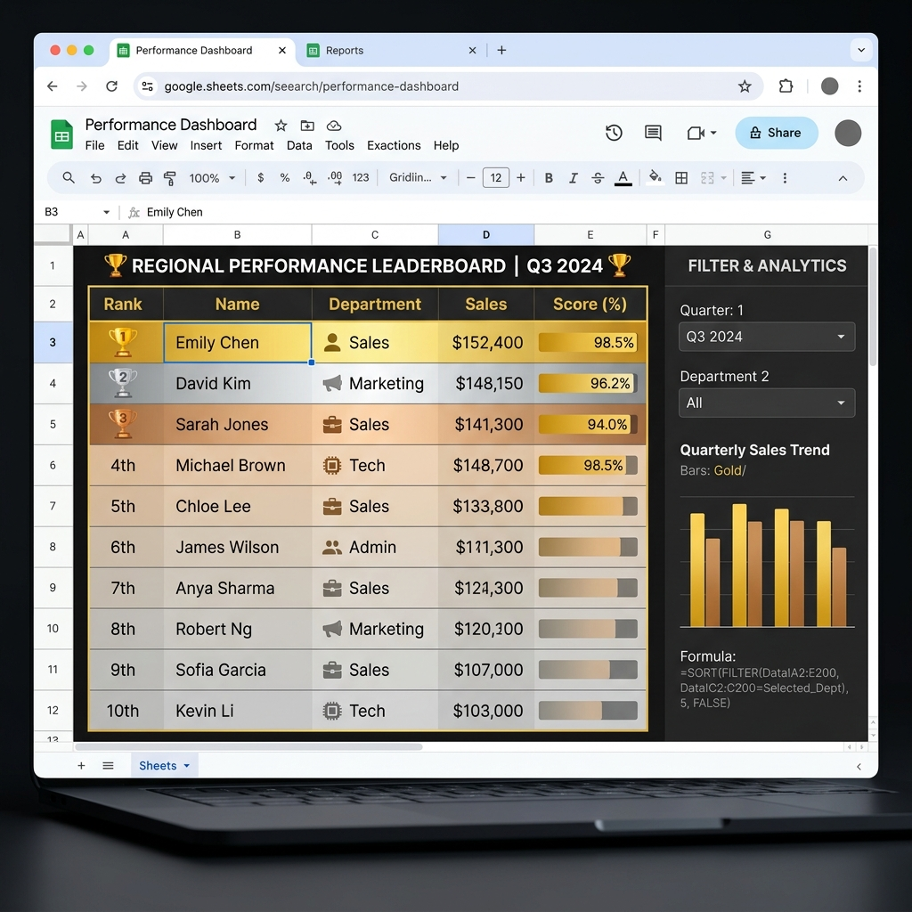
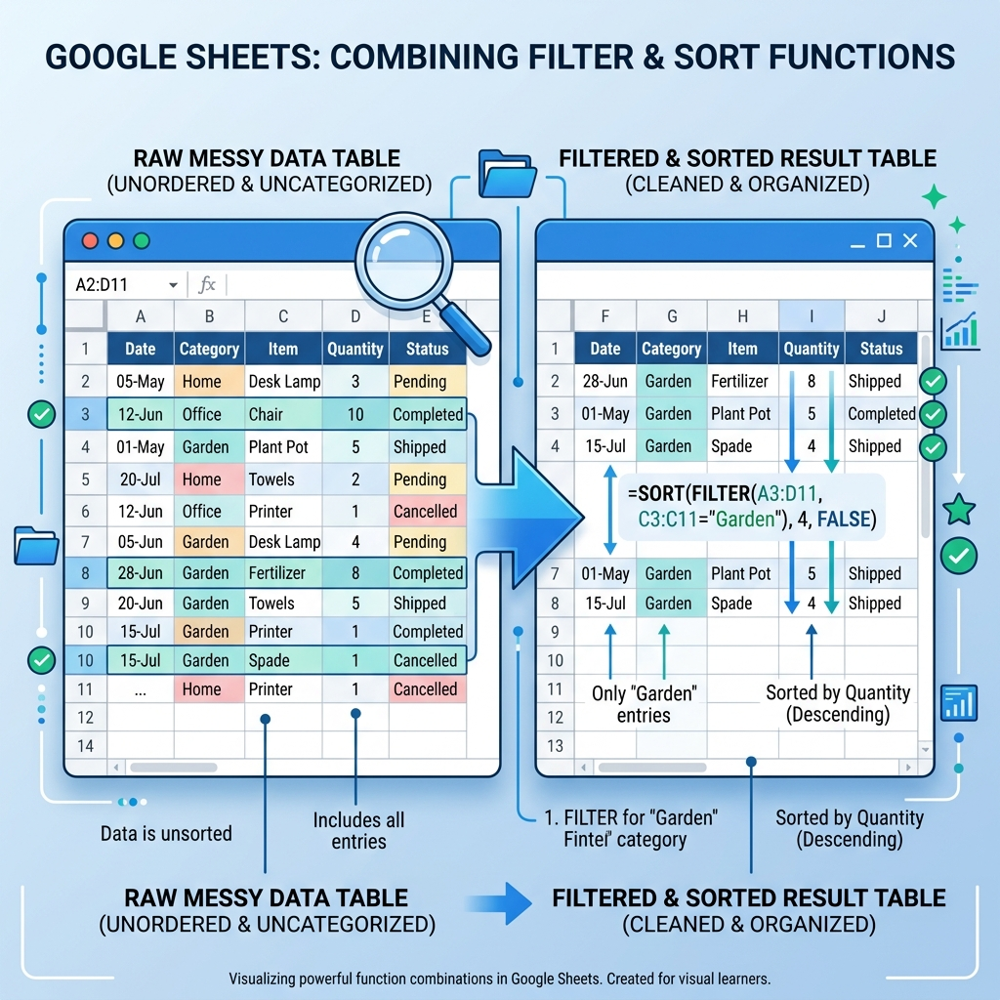

구글 스프레드시트 FILTER & SORT 완벽 가이드: 동적 필터링과 자동 정렬 함수 실무 정복
데이터를 다루다 보면 "이 조건에 맞는 행만 뽑아서 점수 순으로 정렬하고 싶다"는 상황이 반드시 옵니다. 예전에는 QUERY 함수나 피벗 테이블을 썼지만, FILTER 함수와 SORT 함수는 훨씬 가볍고 직관적인 방법으로 이 작업을 처리합니다. 두 함수는 단독으로도 강력하지만, 조합할 때 진가가 드러납니다. 데이터가 원본 시트에서 바뀌면 FILTER+SORT 결과 범위도 자동으로 갱신되는 동적(Dynamic) 배열 함수이기 때문입니다. 이번 가이드에서는 기초 문법부터 다중 조건·실무 응용까지 단계별로 완벽하게 정리합니다.
1. FILTER 함수 기초: 문법과 핵심 인수 파악
FILTER 함수는 "조건을 만족하는 행만 골라서 그대로 출력"하는 함수입니다. VLOOKUP처럼 특정 열만 반환하는 것이 아니라 지정한 범위 전체를 조건에 맞게 걸러냅니다. 따라서 결과물은 자동으로 여러 행·여러 열이 됩니다. 구글 스프레드시트가 이를 자동으로 인접 셀에 채워 넣는 이 특성을 스필(Spill)이라고 부릅니다.
FILTER 함수의 기본 구문은 아래와 같습니다.
FILTER(범위, 조건1, [조건2, ...], [조건 없을 때 반환값])
범위 : 필터링할 데이터 전체 (열 머리글 제외)
조건1 : TRUE/FALSE를 반환하는 논리 배열 (범위와 행 수 동일)
조건2 이상 : 추가 조건 (AND 논리로 결합)
반환값 : 조건 일치 행이 없을 때 표시할 값 (생략 시 #N/A 오류)
가장 단순한 예를 들어보겠습니다. A열에 부서명, B열에 이름, C열에 점수가 있는 테이블에서 '마케팅' 부서만 필터링하려면:
FILTER(A2:C100, A2:A100="마케팅", "결과 없음")
이 수식 하나로 A2:C100 중 A열이 "마케팅"인 모든 행이 자동으로 출력됩니다. 데이터가 추가되거나 변경되면 결과도 실시간으로 반영됩니다. 참조 범위를 열 전체(A:C, A:A)로 잡으면 무한 확장이 가능하지만, 불필요한 빈 행까지 처리해 속도가 느려질 수 있으니 실제 데이터 범위보다 약간 여유를 두어 지정하는 것이 권장됩니다.
FILTER 함수로 부서별 데이터를 동적으로 추출한 시트 화면 / AI 제작 이미지
2. 실무 예제 1: 부서별 데이터 동적 추출
다음과 같은 직원 데이터가 있다고 가정합니다.
| A: 부서 | B: 이름 | C: 점수 | D: 등급 |
|---|
| 영업 | 김민준 | 88 | B |
| 마케팅 | 이수연 | 95 | A |
| 마케팅 | 박지훈 | 72 | C |
| 개발 | 최예은 | 91 | A |
| 영업 | 정다운 | 65 | D |
| 마케팅 | 한서연 | 80 | B |
F2셀에 드롭다운으로 부서명을 선택할 수 있도록 만들었다면, G1에 다음 수식 하나로 해당 부서 전원의 데이터를 자동 출력할 수 있습니다.
FILTER(A2:D100, A2:A100=F2, "해당 부서 없음")
F2의 값이 바뀌는 순간, G열부터 시작하는 결과 범위 전체가 자동으로 갱신됩니다. 기존에는 VBA 매크로나 복잡한 IF 배열 수식으로 구현하던 동적 조회 기능을 FILTER 함수 하나로 깔끔하게 대체하는 것입니다. 보고서 자동화와 대시보드 구성에서 가장 실용적인 사용 패턴입니다.
3. SORT 함수 기초: 정렬 기준과 오름/내림차순 제어
SORT 함수는 "지정한 범위를 특정 열 기준으로 정렬해서 출력"하는 함수입니다. 기존에는 데이터 메뉴의 정렬 기능을 수동으로 실행해야 했지만, SORT 함수는 원본 데이터를 건드리지 않고 별도 위치에 정렬된 사본을 자동 생성합니다.
SORT 함수의 기본 구문은 다음과 같습니다.
SORT(범위, 정렬_열_인덱스, 정렬_순서, [열2_인덱스, 열2_순서, ...])
범위 : 정렬할 데이터 범위
정렬_열_인덱스 : 기준으로 삼을 열의 순서 번호 (1 = 첫 번째 열)
정렬_순서 : 1 = 오름차순(A→Z, 1→9), -1 = 내림차순(Z→A, 9→1)
추가 인수 : 2차, 3차 정렬 기준을 동일 방식으로 추가 가능
위 예제 데이터에서 점수(C열, 인덱스 3) 기준 내림차순 정렬을 원한다면:
SORT(A2:D7, 3, -1)
결과는 다음과 같습니다.
| 부서 | 이름 | 점수 ▼ | 등급 |
|---|
| 마케팅 | 이수연 | 95 | A |
| 개발 | 최예은 | 91 | A |
| 영업 | 김민준 | 88 | B |
| 마케팅 | 한서연 | 80 | B |
| 마케팅 | 박지훈 | 72 | C |
| 영업 | 정다운 | 65 | D |
원본 데이터는 그대로이고, 정렬 결과가 별도 셀에 자동 출력됩니다. 원본에 행이 추가되거나 점수가 수정되면 SORT 결과도 즉시 반영됩니다.
4. 실무 예제 2: 점수 상위 N개 자동 랭킹 만들기
SORT 함수에 ARRAY 범위를 동적으로 적용하면 "상위 10명 자동 랭킹" 같은 보고서를 함수 2~3개로 완성할 수 있습니다. 간단한 방법은 SORT 함수로 전체 데이터를 내림차순 정렬한 뒤 앞의 N행만 가져오는 것입니다.
ARRAY_CONSTRAIN 함수 또는 INDEX와 SEQUENCE의 조합을 활용하면 됩니다.
ARRAY_CONSTRAIN(
SORT(A2:D100, 3, -1),
5,
4
)
이 수식 하나로 데이터가 매일 갱신되는 영업 실적 시트에서 상위 5명 랭킹 보드가 자동으로 업데이트되는 대시보드를 만들 수 있습니다. 관리자가 별도로 정렬 작업을 할 필요가 전혀 없습니다.

SORT+FILTER 함수로 자동 생성된 실시간 업데이트 랭킹 보드 / AI 제작 이미지
5. FILTER + SORT 조합: 조건 필터 후 자동 정렬
두 함수의 진가는 조합할 때 드러납니다. FILTER로 조건에 맞는 행만 걸러낸 뒤, 그 결과를 바로 SORT로 정렬하는 것입니다. 수식 구조는 SORT의 첫 번째 인수(범위)에 FILTER 함수 전체를 넣으면 됩니다.
아까 예제에서 "마케팅 부서 직원만, 점수 내림차순으로" 출력하려면:
SORT(
FILTER(A2:D100, A2:A100="마케팅"),
3,
-1
)
결과는 마케팅 부서만 추출된 채로 점수 높은 순으로 자동 정렬되어 출력됩니다. 드롭다운과 결합하면 선택한 부서의 성적표가 실시간으로 정렬 반영되는 인터랙티브 보고서가 완성됩니다.
중요한 점은 SORT 함수의 열 인덱스가 FILTER 출력 결과 기준이라는 것입니다. FILTER가 A:D 4개 열을 모두 출력한다면 SORT의 인덱스 3은 C열(점수)을 의미합니다. 만약 FILTER에서 특정 열만 선택해 출력한다면 인덱스를 다시 계산해야 합니다.
6. 다중 조건 FILTER: AND와 OR 논리 활용법
여러 조건을 동시에 적용할 때는 AND 조건(*)과 OR 조건(+)을 활용합니다. 곱셈 연산자(*)는 두 배열 모두 TRUE인 행만 선택(AND), 덧셈 연산자(+)는 하나라도 TRUE인 행을 선택(OR)합니다.
AND 조건 예시: 마케팅 부서이면서 점수 80 이상인 행 추출
FILTER(A2:D100,
(A2:A100="마케팅") * (C2:C100>=80),
"조건 일치 없음"
)
OR 조건 예시: 마케팅 또는 영업 부서인 행 추출
FILTER(A2:D100,
(A2:A100="마케팅") + (A2:A100="영업"),
"조건 일치 없음"
)
AND와 OR을 혼합할 때는 괄호로 우선순위를 명확하게 지정해야 합니다. 예를 들어 "(마케팅 OR 영업) AND (점수 80 이상)"은 다음과 같이 씁니다.
FILTER(A2:D100,
( (A2:A100="마케팅") + (A2:A100="영업") ) * (C2:C100>=80),
"조건 일치 없음"
)
7. 자주 발생하는 오류와 해결법
⚠️ #N/A 오류: 조건에 맞는 행이 하나도 없을 때 발생합니다. 마지막 인수에 반환값("결과 없음")을 설정하면 해결됩니다.
⚠️ #REF! 오류 또는 결과 겹침: FILTER/SORT 결과가 스필(spill)되는 범위에 이미 다른 값이 있을 때 발생합니다. 결과 출력 영역에 충분한 빈 셀을 확보해야 합니다.
⚠️ 조건 배열 크기 불일치: 범위(A2:D100)와 조건(A2:A50)의 행 수가 다르면 오류가 납니다. 반드시 같은 행 수로 맞춰야 합니다.
SORT 함수에서 자주 나오는 실수는 열 인덱스 착오입니다. SORT의 두 번째 인수는 범위 내 상대적 열 번호이지, 시트 전체 열 번호가 아닙니다. 범위가 B2:E100이라면 B열이 인덱스 1, E열이 인덱스 4가 됩니다.

FILTER+SORT 조합으로 원본 데이터를 자동 정제하는 워크플로 / AI 제작 이미지
8. SORTN 함수: 상위 N개 추출의 더 간결한 방법
ARRAY_CONSTRAIN+SORT 조합의 더 간결한 대안이 있습니다. 바로 SORTN 함수입니다. 이름 그대로 "Sort + N개"의 의미로, 정렬 후 상위 N개만 반환하는 기능이 하나의 함수에 내장되어 있습니다.
SORTN(범위, N, 동점처리모드, 정렬_열, 정렬_순서)
SORTN(A2:D100, 5, 0, 3, -1)
동점처리모드 인수(세 번째)는 0=동점 무시(정확히 N개), 1=동점자 모두 포함, 2=동점자 제외 후 N개 반환, 3=동점자 그룹 마지막까지 포함하는 방식을 선택합니다. 실무에서는 0 또는 1이 가장 자주 사용됩니다.
9. 실무 응용: 동적 대시보드 자동화 레시피
지금까지 배운 FILTER와 SORT를 결합해 주간 영업 보고서 자동화 대시보드를 설계하는 방법을 소개합니다. 이 레시피는 실제 업무 현장에서 가장 많이 활용되는 패턴입니다.
설계 구성:
- RAW 시트: 매일 영업팀이 실적을 직접 입력하는 원본 데이터 시트.
- DASHBOARD 시트: FILTER+SORT 수식만으로 자동 갱신되는 보고서 시트.
Step 1. 부서별 필터: DASHBOARD 시트 B1셀에 드롭다운(데이터 유효성 검사)으로 부서명 선택 기능 추가.
Step 2. 기간 필터: C1셀에 시작일, D1셀에 종료일 입력 → RAW 시트 날짜 열을 C1≤날짜≤D1 조건으로 AND 결합.
Step 3. FILTER+SORT 수식 작성:
SORT(
FILTER(RAW!A2:F1000,
(RAW!B2:B1000=B1) *
(RAW!A2:A1000>=C1) *
(RAW!A2:A1000<=D1),
"해당 기간 데이터 없음"
),
5, -1
)
Step 4. 결과 확인: B1·C1·D1만 바꾸면 보고서 전체가 자동 갱신. 팀장이 매주 수동으로 정렬할 필요 없음.
이 패턴을 한 번 세팅해 두면, 팀원이 RAW 시트에 실적만 입력하면 대시보드는 매번 새로운 데이터를 반영해 자동으로 최신 상태를 유지합니다. QUERY 함수보다 구문이 직관적이고, 조건 수정도 쉽기 때문에 비개발자도 손쉽게 유지보수할 수 있다는 것이 FILTER+SORT 조합의 가장 큰 실무적 장점입니다.
#구글스프레드시트
#FILTER함수
#SORT함수
#동적배열
#스프레드시트함수
#데이터필터링
#자동정렬
#구글시트실무
#업무자동화
#스프레드시트배우기